Biomedical Engineer, EiT — implantable devices & microfabrication
I design medical devices that have to work inside a body — implants, sensors, and the fabrication processes that make them real. My recent work has centred on spinal cord injury: a flexible microelectrode stimulator and a light-activated hydrogel scaffold, both built from the ground up in the cleanroom and tested through to live animal studies. Before that, I led student teams building payloads for sounding rockets and a wearable that detects opioid overdose.
Flexible ventral stimulator for spinal cord injury repair
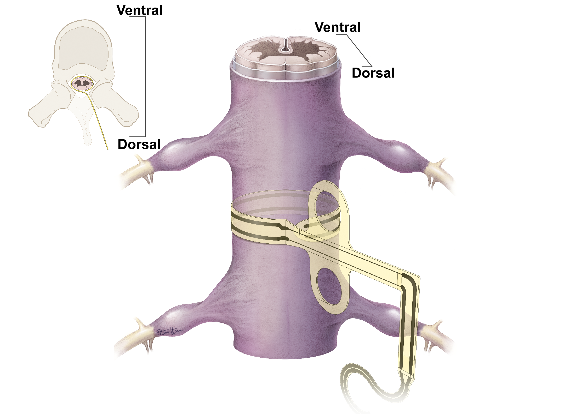
Illustration of the implantation of the stimulator device. Thank you Sasha Hamilton for the illustration
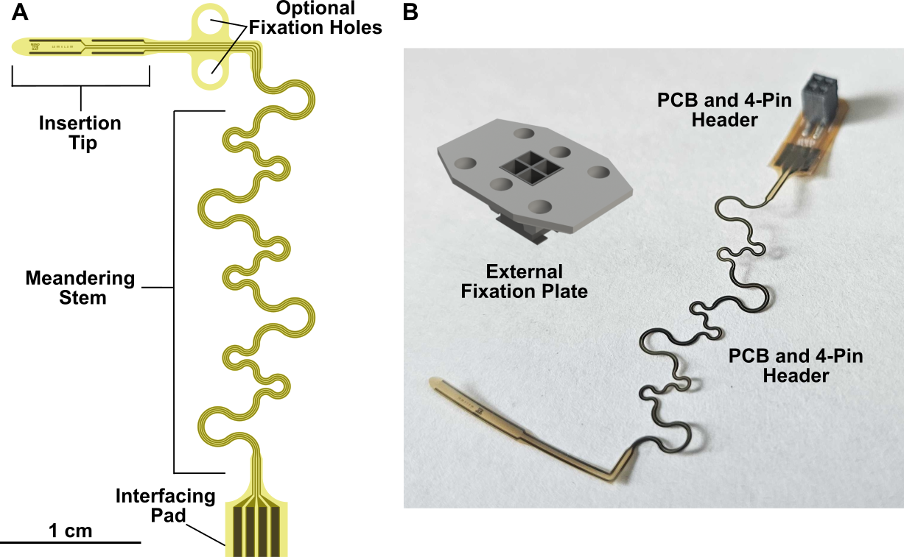
Schematic of the stimulator device (A) and the actualized implant (B).
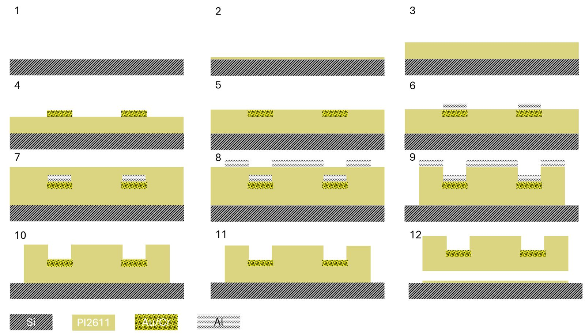
Manufacturing method. A clean room environment is essential for a device this small.
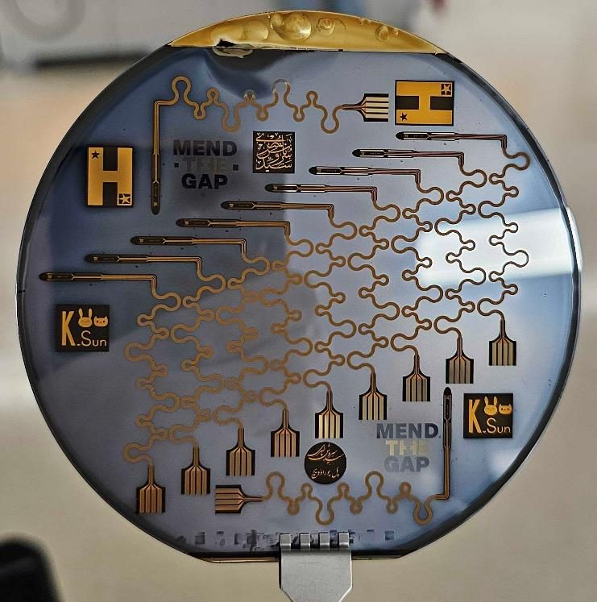
Devices on a foundational silicon wafer. The larger "K" and "H" designs came from an outreach event I led, where high-school students designed and helped fabricate their own microfabricated art piece.
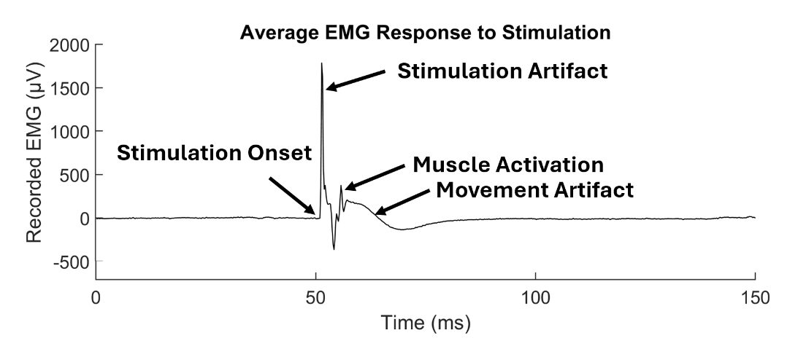
Measured animal muscle response to stimulation. A video of the muscle impulse is available on request.
My most recent project was an implant designed to treat spinal cord injury. Injury leaves a fluid-filled lesion at the site, severing neurons that once spanned the region. Those damaged neurons rarely recover on their own, and electrical stimulation is one way to encourage regeneration — but it only works if it's delivered exactly where it's needed. In rats and humans alike, the ventral side of the spinal cord carries the circuitry for lower-limb movement, so stimulating that region can produce real restorative effects. It's also one of the hardest places to reach, requiring a delicate surgery and an equally delicate device.
Light-sensitive hydrogel for spinal cord injury repair
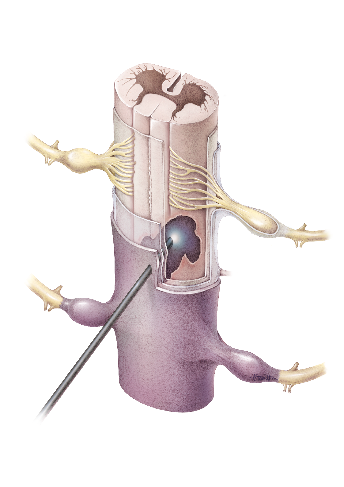
Illustration of the proposed method of hydrogel illumination. Thank you Sasha Hamilton for the illustration
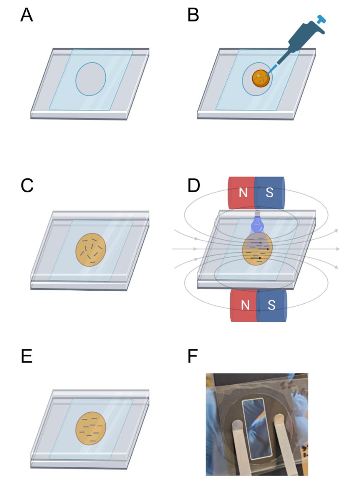
Sample preparation method, used to experimentally characterize the optical properties of our hydrogel system.
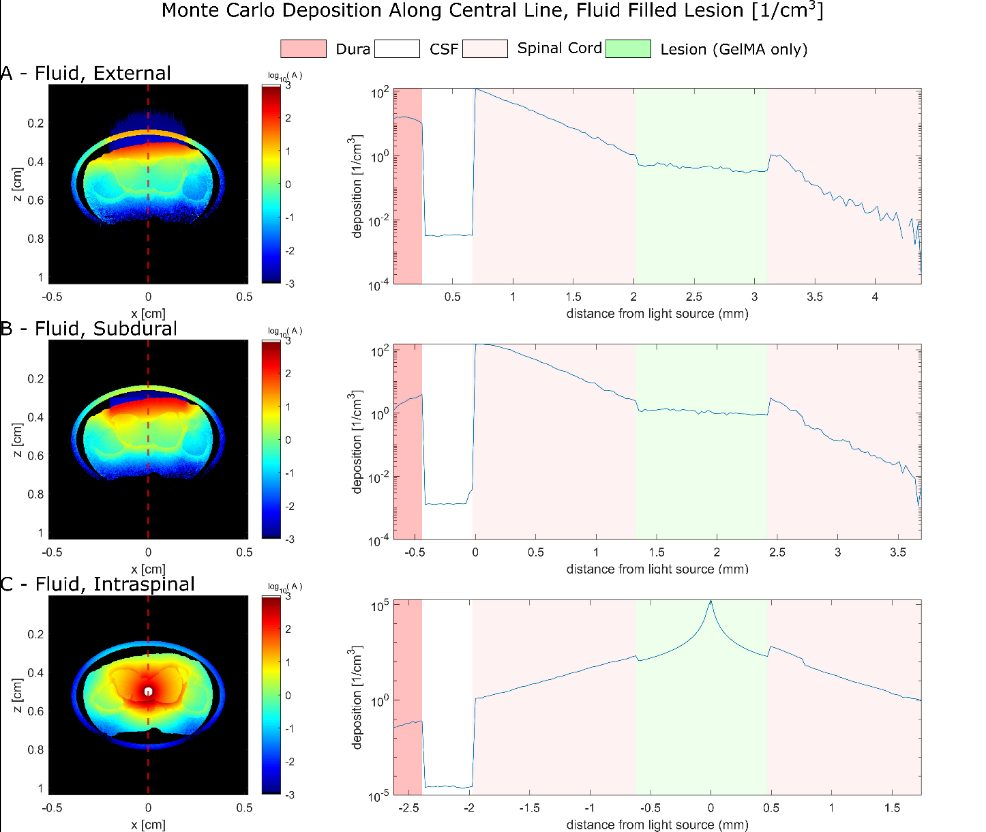
Example outputs of the Monte Carlo simulation for external (A), subdural (B), and fiber-optic (C) illumination.
Alongside the stimulator work, I helped develop an injectable hydrogel for spinal cord injury. Injured neurons aren't just lethargic — they're picky about what they grow through, and a fluid-filled lesion offers no structure at all. The proposed fix is to inject a hydrogel that solidifies inside the lesion, giving neurons a scaffold to regenerate along. Our lab chose a blue-light-sensitive gel specifically because it allows finer control over solidification during surgery, unlike typical enzymatic gels that start setting the moment they're mixed — putting real time pressure on the surgeon.
My job was to find the best way to expose the gel for uniform solidification throughout the injury site. I measured the gel's optical properties, built Monte Carlo simulation software to model different exposure setups, and verified the results against the surgical procedure used in rat studies.
Microbial fuel cell payload for experimental rocketry competitions
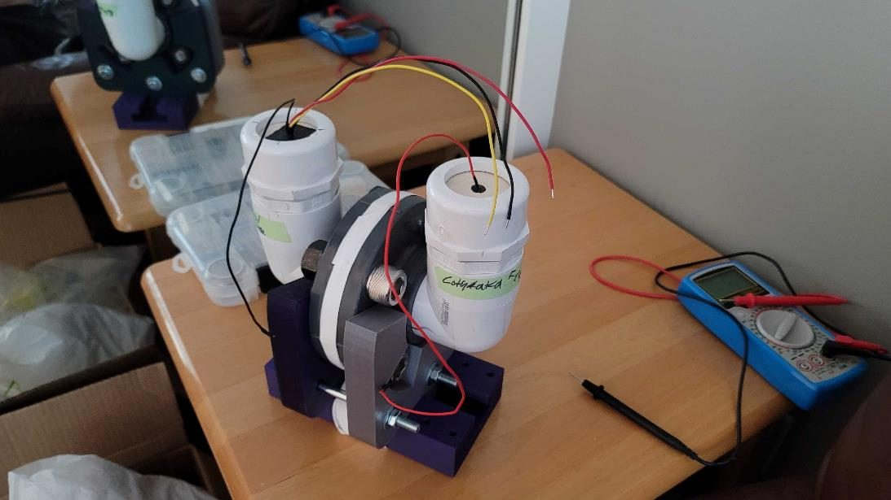
An individual fuel cell for the CAN RGX payload.
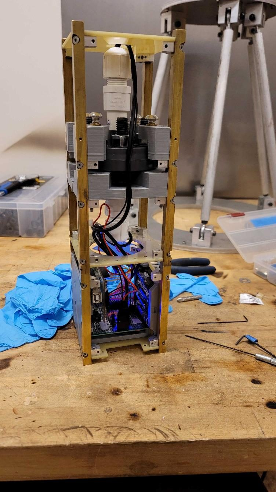
The 3-unit CubeSat format for the experiment — a 10 × 10 cm frame that survived a supersonic rocket launch.
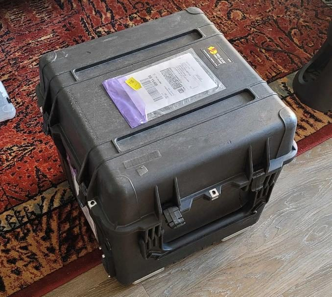
The pelican case housing the CAN RGX experiment.
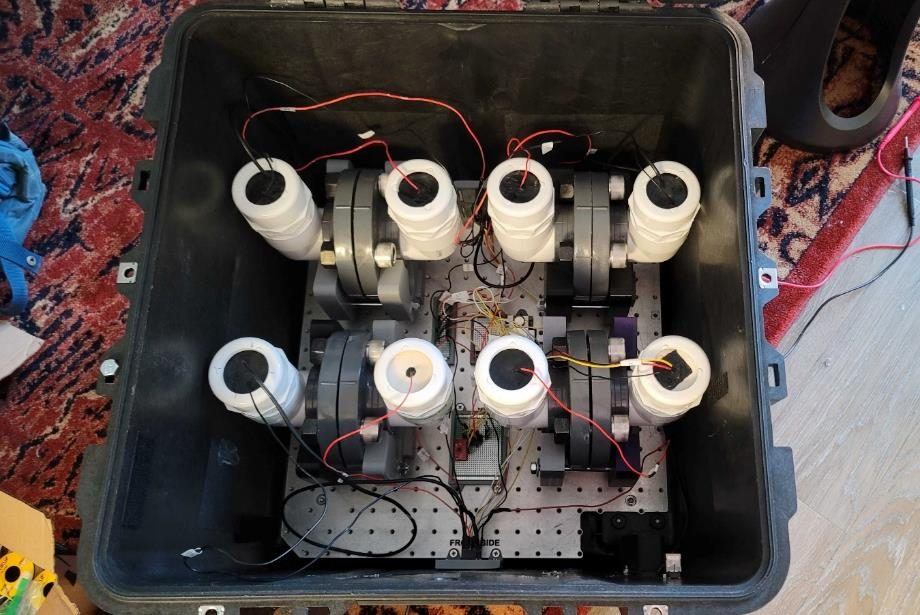
Four fuel cells for the CAN RGX competition.
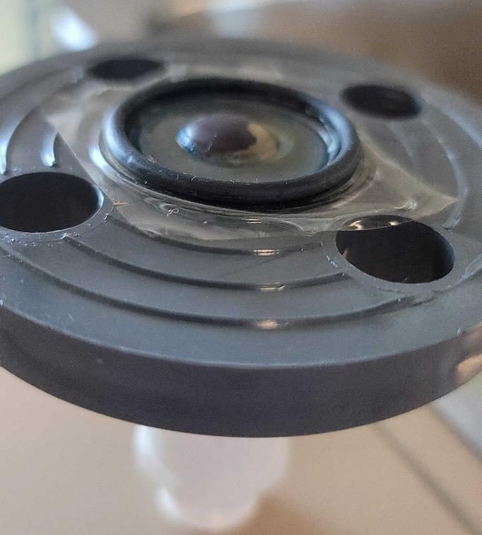
The cost of several Gs of acceleration and a crash landing: the membrane separating cathode and anode has gone hemispherical near its center.
I led a student team building a payload for two very different competitions: the Canadian Reduced Gravity Experiment Design Challenge (CAN RGX), flown on a parabolic flight that simulates microgravity, and the International Rocketry Engineering Competition (IREC), where a sounding rocket delivers a 3-unit CubeSat payload. Each imposed its own design constraints, so we ended up building two distinct versions of the same idea.
That idea was a microbial fuel cell — a bacteria-powered battery. It sounds unrelated to space travel, but there are real applications: wastewater treatment and methane production, where methane can double as rocket propellant. Doing useful work while generating power is hard to argue with.
As lead, I handled the administrative and mentoring side, but I was also the systems integrator and, as the only biologist on the team, the biological lead. Electrical, mechanical, and biological design all had to work together — my first real introduction to systems engineering, and probably why I enjoyed the systems work on the stimulator so much later on. This project also ran through the pandemic; despite the toll that took, I managed to keep the team together.
KEY SKILLS
systems engineeringteam managementproject managementbiological designdesign for manufacturingsignal processing
Sep 2021 – May 2022
Opioid overdose detection and reversal device
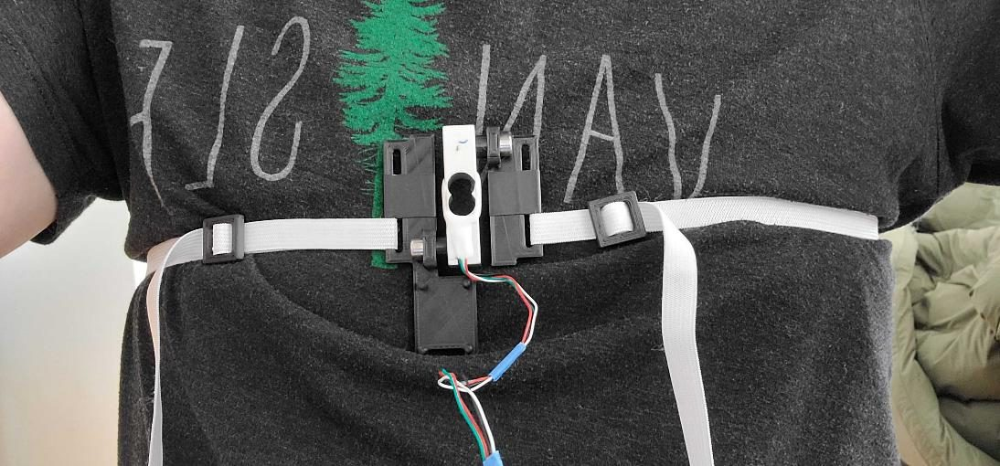
The first prototype of the chest strap.
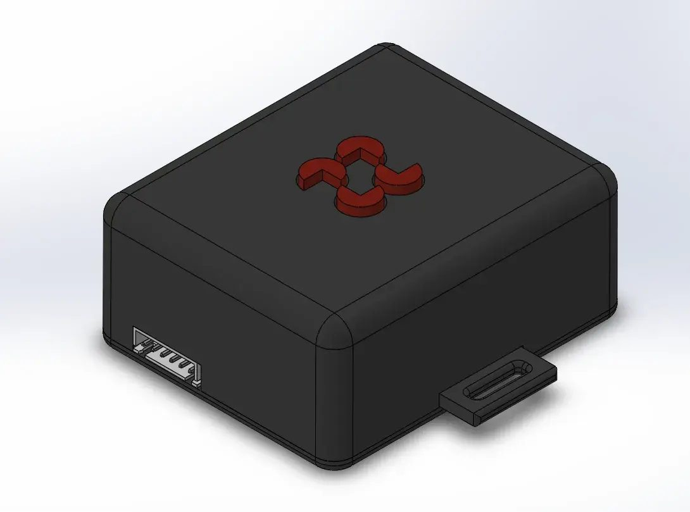
Render of the final chest strap design. The enclosed box holds the strain gauge, plus a button and buzzer to check patient arousal.
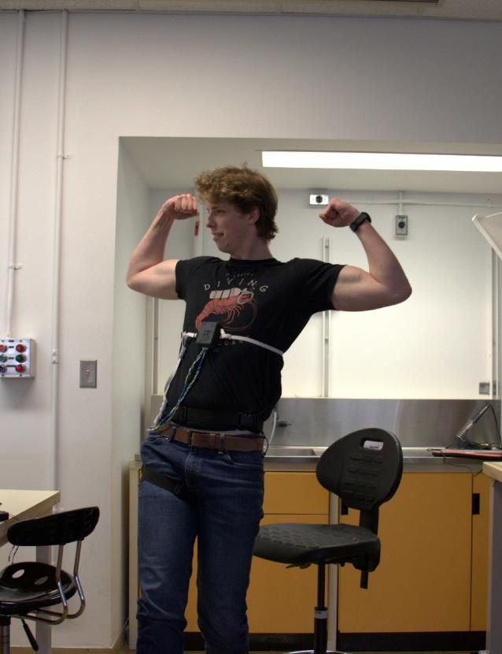
A younger, and perhaps happier, Paul wearing the final device.
As my capstone project, I led a team designing a device to detect and reverse opioid overdose. I designed and built the detection half: a chest strap that tracks breathing rate, since overdose kills by stopping respiration — so measuring breath directly seemed like the most direct signal to act on.
The strap itself is spandex fitted with a strain gauge. As the chest expands with each breath, the spandex stretches and the gauge picks up the tension. Once filtered — electronically through the circuitry, then digitally on the Arduino — the result is a clean readout of a person's breathing, with rate found from the peak-to-peak timing of the signal.
A device like this only works if it fits everyone, so I tested it at a capstone conference at UBC, inviting students, professors, and guests to strap it on and just breathe. It worked on every body type in the room, including through thick winter jackets — the strap buckles on in seconds, like a seatbelt, which matters just as much as the sensing itself if anyone's actually going to wear it.
KEY SKILLS
team managementproject managementbiological designsignal processingclinician consultationmechanical designadherence
02
Education & recognition
DEGREES
M.A.Sc, Biomedical Engineering
University of British Columbia
Sep 2022 – Nov 2025 · 4.0 GPA, Dean's Honour List
B.A.Sc, Biomedical Engineering
University of British Columbia
Sep 2018 – May 2022 · 4.0 GPA, Dean's Honour List
AWARDS & SCHOLARSHIPS
President's Academic Excellence Initiative PhD Award $15,000
Faculty of Applied Science Graduate Award $90,000
Trek Excellence Scholarship $7,000
Dean's Honour List 2018–2025
SBME Research Day Poster Competition 2nd place
03
Beyond Engineering
This section can be safely ignored — it's just a bit more about me. I bake (mostly my grandma's Polish recipes) and cook, climb, enjoy photography on mid 2000s digicams, and occasionally lose at board games.
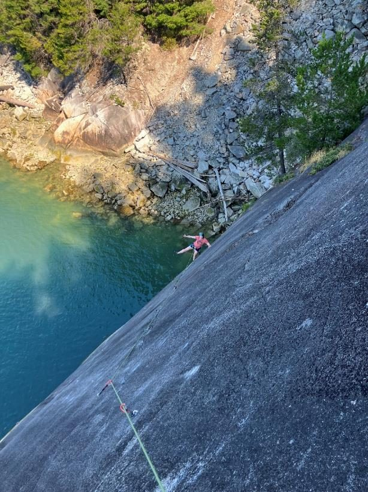
Rock climbing at Seal Cove, about 30 minutes from Horseshoe Bay. I'd like to climb outdoors more — most of my climbing so far has been in gyms.
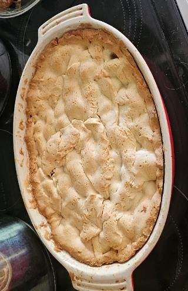
Szarlotka — Polish apple pie, made from my grandma's recipe.
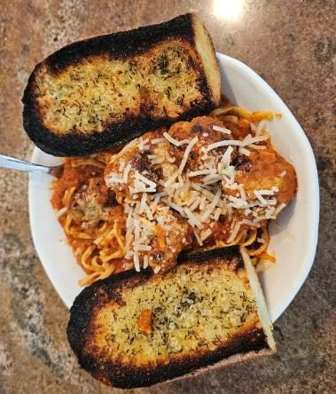
Spaghetti and meatballs, homemade red sauce and meatballs. I evidently need to pay more attention to the garlic bread while it's under the broiler.
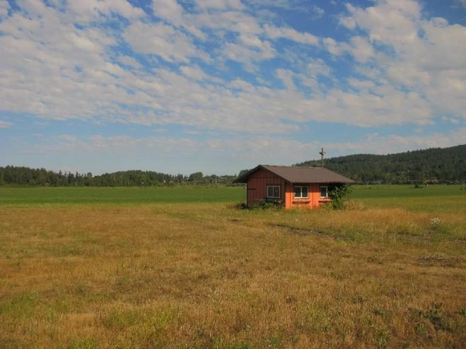
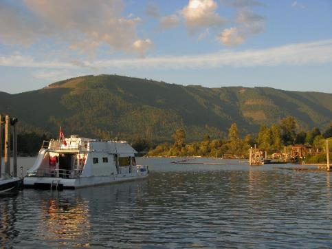
I've recently gotten into photography — specifically on a digital camera from the mid-2000s, which is after I was born, out of nostalgia for the technology behind the old photos of me in my parents' albums. I swear I'm not a hipster.
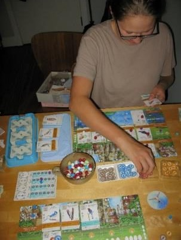
I like board games — though not, in fact, Wingspan. This was the only photo I had of a board game and I couldn't find a better one. Oops.